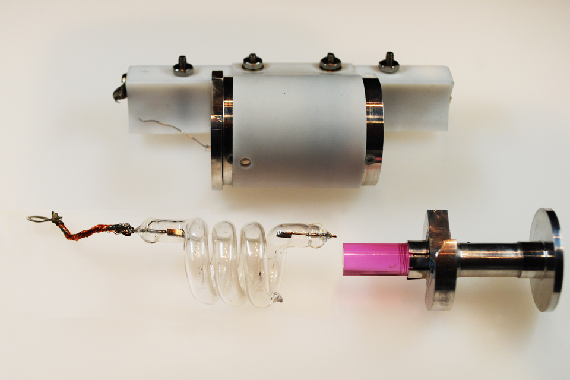
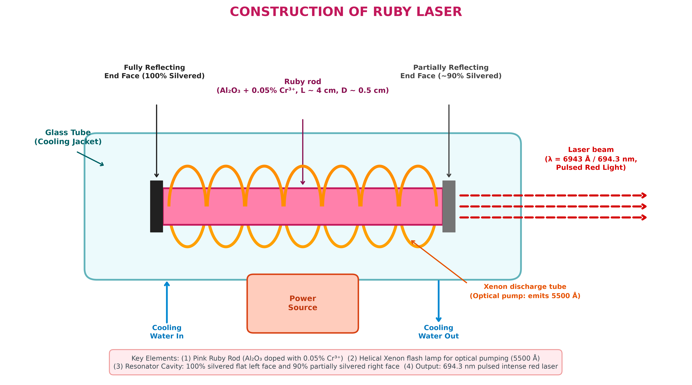
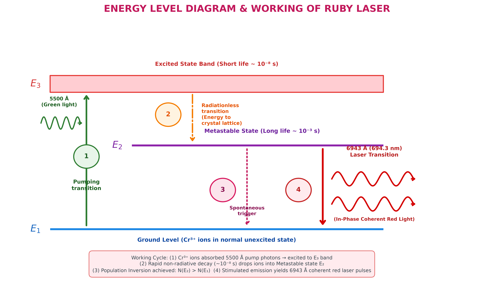

6. Construction & Working of Ruby Laser
A. Construction of the Ruby Laser
- The Ruby Laser was the first operational laser device, developed in 1960 by Theodore H. Maiman.
- It operates as a three-level solid-state pulsed laser. Its construction comprises the following main parts:
- 1. Active Medium (Ruby Rod):
A synthetic cylindrical crystal rod of Corundum / Aluminum Oxide (Al₂O₃) in which approximately 0.05% of the aluminum atoms are substituted by Chromium atoms (Cr₂O₃).
• The active centers generating laser radiation are the trivalent Chromium ions (Cr³⁺), giving the crystal a characteristic pink color.
• Standard rod dimensions are approximately 4 cm in length and 0.5 cm in diameter.
• The end faces are ground strictly flat and polished optically parallel to within fractions of an optical wavelength. - 2. Optical Resonant Cavity:
The two ends of the rod are silvered directly:
• One end face is 100% silvered (fully reflecting mirror).
• The opposing end face is partially silvered (~90% reflection, ~10% transmission) to allow beam emission. - 3. Optical Pumping System:
A Helical Xenon flash discharge tube surrounds the ruby rod.
• Connected to a high-voltage capacitor power supply discharging thousands of joules of electrical energy in millisecond pulses.
• Emits intense green radiation around 5500 Å, coinciding with the strong absorption band of Cr³⁺ ions. - 4. Cooling Jacket:
Because only a modest fraction of the flash energy contributes to optical excitation while the remainder produces thermal heating of the crystal, a double-walled glass tube with circulating cooling water or liquid nitrogen surrounds the assembly.
📷 Real Physical Apparatus
The Historic Ruby Laser (Theodore Maiman, 1960)

Original 1960 Ruby Laser Components: The actual disassembled apparatus built by Dr. Theodore Maiman at Hughes Research Laboratories, showing the pink synthetic ruby crystal rod, the surrounding helical Xenon flash lamp, and the machined cylindrical reflective casing.

Synthetic Ruby Rod (Al₂O₃ doped with 0.05% Cr³⁺): High optical transparency synthetic corundum crystal rod with polished parallel flat ends, responsible for emitting the 694.3 nm deep-red laser pulses.
Diagram 6A: Construction of Ruby Laser (Labelled Schematic)

B. Working of Ruby Laser (Energy Level Diagram)
- The operation of the ruby laser is described through the 3-Level Quantum Energy Scheme of the Chromium ion (Cr³⁺):
- Step 1: Optical Pumping (Transition 1, E₁ ⟶ E₃):
In the ground level (E₁), Cr³⁺ ions absorb green photons of wavelength 5500 Å produced by the xenon flash, exciting them to the broad absorption band (E₃). - Step 2: Radiationless Non-Radiative Decay (Transition 2, E₃ ⟶ E₂):
Level E₃ has a very short lifetime (~10⁻⁸ s). The excited Cr³⁺ ions decay rapidly to the intermediate Metastable State E₂ by transferring non-radiative vibrational energy directly to the crystal lattice as heat. - Step 3: Establishment of Population Inversion (E₂):
The metastable level E₂ exhibits a prolonged lifetime of approximately 10⁻³ seconds (~100,000 times longer than E₃). Pumping transfers ions into E₂ faster than they can decay, depleting ground level E₁ and producing Population Inversion (N₂ > N₁). - Step 4: Spontaneous Initiation (Transition 3, E₂ ⟶ E₁):
A few Cr³⁺ ions drop spontaneously from E₂ to ground level E₁, emitting fluorescent photons at 6943 Å (694.3 nm, deep red). - Step 5: Stimulated Laser Cascade (Transition 4, E₂ ⟶ E₁):
Photons oriented parallel to the axis reflect back and forth between the mirrored ends, stimulating excited ions in E₂ to emit identical 6943 Å photons in phase. An intense, coherent laser pulse of wavelength 6943 Å bursts through the partially silvered mirror.
Diagram 6B: Energy Level Diagram of Ruby Laser (Working Scheme)

Drawbacks & Limitations of the Ruby Laser
- 1. High Pumping Threshold: Because the lower laser level is the ground state (E₁), more than 50% of all chromium ions in the crystal must be excited to achieve population inversion.
- 2. Low Energy Efficiency: Only the green spectral fraction (~5500 Å) of the broad xenon flash is utilized; non-resonant radiation is dissipated as crystal heat.
- 3. Pulsed (Non-Continuous) Output: Emits radiation in short microsecond bursts rather than a continuous beam.
- 4. Thermal Inhomogeneities: Crystal heating causes refractive index variations and requires active cooling.
Quick Quiz: What is the exact wavelength and color of light emitted by the Ruby Laser?